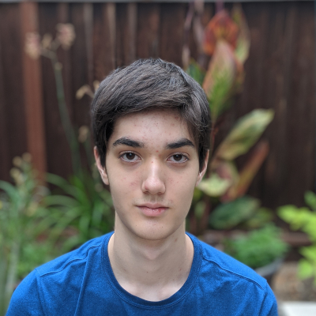
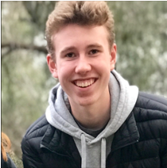
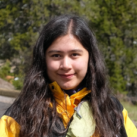

Team ATOM (Air Travel Operation Methods) was an internship team at NASA Ames' Summer 2020 Volunteer Internship Program for high school students, under the Aviation Systems Division.
Individuals

Trishala Jain is an incoming senior at Dublin High
School, California. Immersed in identifying complex problems and inventing creative solutions,
Trishala has looked to her community to fuel her interest in entrepreneurship and drive
meaningful impact. In her free time, Trishala collaborates with global women-in-STEM
organizations such as Technovation, Girls in Engineering, and Miss CEO to bring tech
education to girls everywhere.
Trishala researched the manufacturing industry's response to COVID-19 and focussed
on analyzing upcoming trends in Urban Air Mobility.
Vikram Menon is a 16-year-old rising junior at
Lexington High School in Lexington, MA. He is a passionate learner who loves to apply his knowledge in real-world scenarios.
His interests lie within the intersection of artificial Intelligence, data analysis, and autonomous Drones, and he loves
to work on projects involving these topics in his free time. He also enjoys building props and other structures,
and tinkering around with various other hands-on projects as a hobby, giving him insight into the aspects of engineering.
Vikram
helped gather information on the air cargo portion of the project. He mainly contributed to creating the graphs for
the website and making them interactive.

Derek Nease is a 17 year old rising senior in
Fremont, California. His interests are in machine learning and fluid mechanics. He
also keeps ants as a hobby, which gives him some interesting insight into swarm dynamics
and how it could be combined with deep learning to be used in transport applications.
Derek explored the affect that decreases in aviation activity had on air pollution. He also led the design and programming of the website.

Cole Robins is a 17-year-old rising senior at Lick-Wilmerding High School
in San Francsico, Califronia. He has interests in astronomy, physics, programming, and other STEM fields and is deeply curious about the
universe as a whole. His curiosity around these areas specifically led to his founding of the astronomy club at Lick-Wilmerding, his interning
over multiple summers at a various science museums across the Bay Area and a software company in downtown San Francsico, as well as a passion
for backpacking and exploring the great outdoors.
Cole helped gather information on air passenger travel and put together content for the team's final presentation.

Kimia Sattary is a 16 year old rising senior at Lowell
High School in San Francisco, California. She likes learning about science and math, and she is currently
exploring computer science and physics. Kimia also likes to help her community and work with others. She volunteers
at the San Francisco Zoo where she works with animals and other volunteers to teach the public about conservation.
Kimia is passionate about the environment and loves the outdoors. When she leaves the city, she likes to go hiking and stargazing,
and when she is in San Francisco, she likes to go on long walks to different bookstores in the city.
Kimia helped gather information on the
economics portion of the project. She also
contributed by creating graphs and working on the HTML for the website.